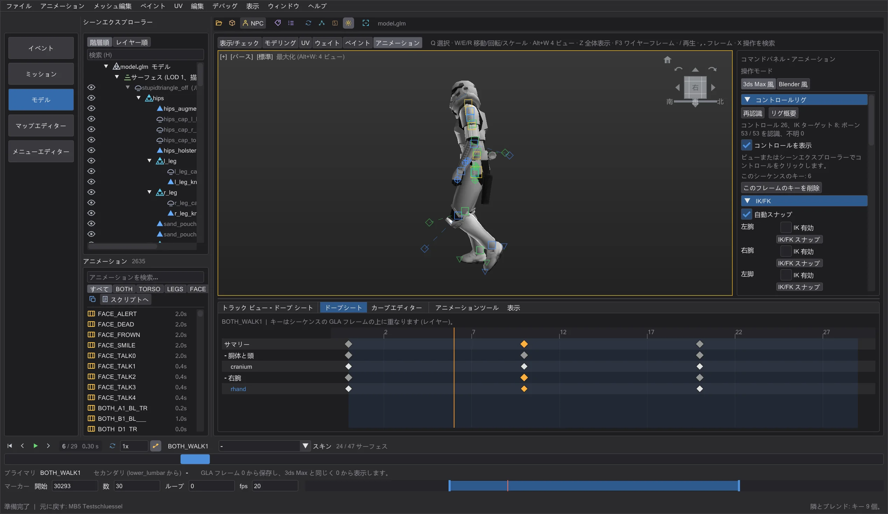
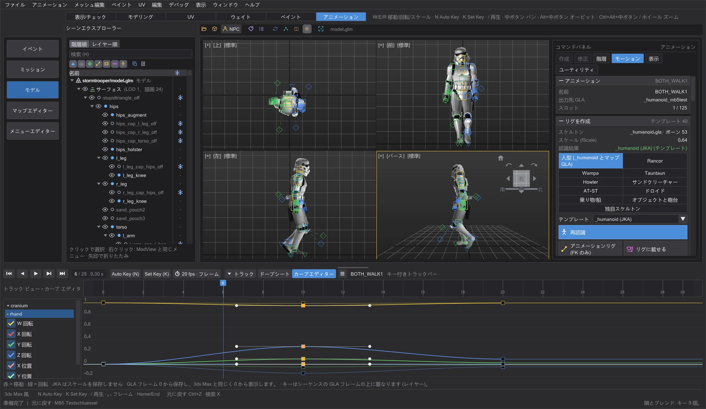
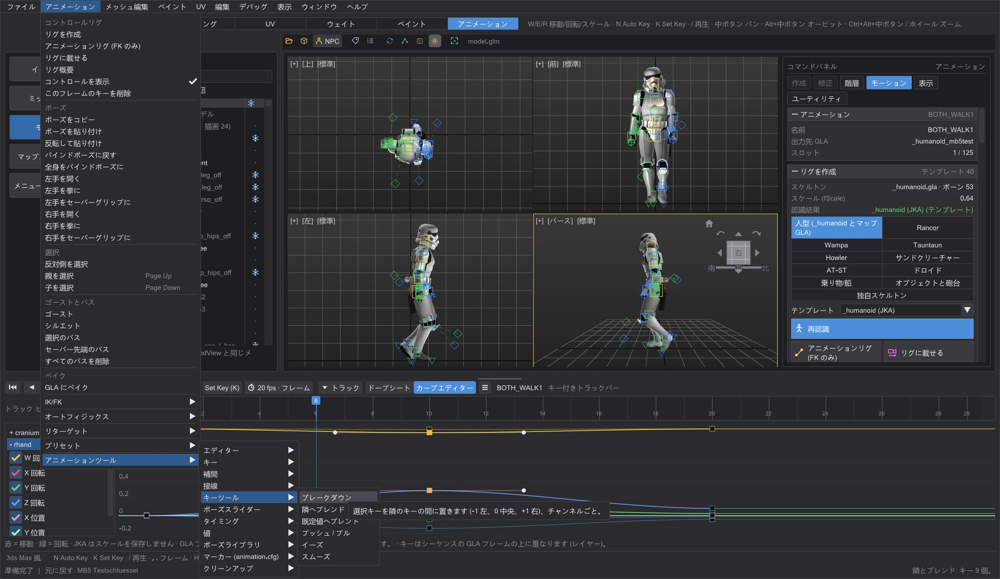
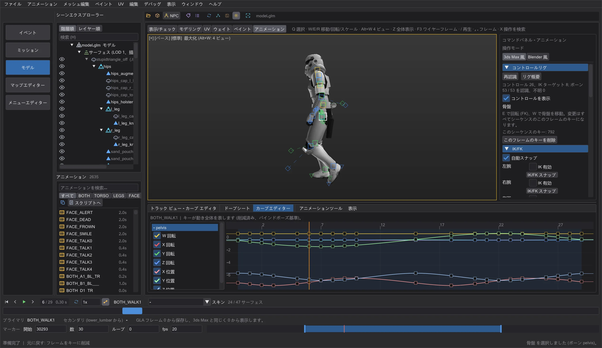

モデルタブ: ドープシート、カーブエディター、アニメーションツール
コントロールリグのキーを時間とカーブで編集し、ブレンドやイーズ、タイミングと値の変更、シーケンス全体のミラー、ポーズのライブラリ保存、ベイク済みフレームの少数キーへの削減、ビューでの骨盤パスのドラッグを行います。

ドープシート#
ドープシート (メニュー アニメーション > アニメーションツール > エディター、ビューの右クリック、検索 X/F3、グループ カーブとアニメーションツール) でタイムラインのトラックがドープシートとして開きます。3ds Max 風では トラック ビュー - ドープ シート、Blender 風では ドープシート という名前です。タイムラインの上のハンドルでトラックの高さを変えます。左に行が並びます: サマリー、肢ごとの集約行 (クリックで折りたたみ)、ボーンごとの行。右では選択中のシーケンスの各キーがひし形です。ひし形をクリックで選択 (Shift で追加)、キーを枠で囲んで選択、選択キーをドラッグで時間移動 - GLA は整数フレームを保存するので常に整数フレーム単位です。集約行のクリックはその肢のそのフレームの全キーを選びます。明るい帯は animation.cfg 行のシーケンス、オレンジの線は現在フレームで、定規をクリックすると設定します。ホイールでズーム、中ボタンでパン。アニメーションのみ と 選択のみ で行を絞り、すべて表示 でシーケンスに合わせます。Blender 風ではマウスがエディター上にある間、X で削除、G で移動、S でスケールします。
カーブエディター#
カーブエディター (3ds Max 風では トラック ビュー - カーブ エディタ、Blender 風では グラフエディター) はチャンネルごとに 1 本のカーブを表示します: 回転はクォータニオン W 回転、X 回転、Y 回転、Z 回転、位置は X、Y、Z。左のボーンをクリックするとチャンネルが開き、各カーブの表示を切り替えられます。キーを上下にドラッグするとそのチャンネルの値が変わり、横にドラッグすると整数フレーム単位で移動します。ハンドルをドラッグしてカーブを整えます。補間 は選択キーから次のキーまでを一定、リニア (最短の弧で回転、slerp)、ベジェにします。接線 はハンドルを設定します: Blender 風では自動クランプ (新しいキーの既定値、オーバーシュートしない)、自動、ベクトル、整列、フリー。3ds Max 風では同じ種類が自動、スムーズ、リニア、カスタム、カスタム (分離) という名前です。ベジェカーブはBlender の F カーブとまったく同じに計算します (ハンドル規則、Continuous Acceleration、評価)。ドラッグした自動ハンドルは整列に、ベクトルハンドルはフリーになります。Ctrl+ホイールで値をズーム。ポーズではクォータニオンを正規化するので、フィギュアは常に剛体として回転します。

アニメーションツール#
すべてのツールはメニュー アニメーション > アニメーションツール、エディターとビューの右クリック、検索にあり、それぞれツールチップ付きです。キーツール は選択キーにチャンネルごとに働きます: ブレークダウン、隣へブレンド、既定値へブレンド、プッシュ / プル、イーズ、スムーズ。ポーズスライダー は前後のキーから現在フレームのポーズを設定します: ブレークダウナー、ポーズをプッシュ、ポーズをリラックス、隣とブレンド、レストポーズへブレンド。それぞれ小さなスライダーが開き、ドラッグ中からビューに結果が出ます。適用 で取り消し 1 回分として確定、キャンセル で元に戻します。タイミング: 選択を現在フレームへスナップ (または最初か最後のキーがそこに来るよう移動)、現在フレームでフレームの挿入・削除、タイムオフセット、キー時間の共有 (最後に選んだボーンの時間に合わせることも)。値: ゼロ、現在の値にする、反転 (符号)、逆再生、現在フレームでミラー。アニメオフセット はあるキーの変更をそのボーンの他のキーへ移します。アニメーションをミラー (左右) はシーケンス全体を l_/r_ のボーンでミラーします。ポーズライブラリ は名前付きポーズをモデル文書に保存し、ミラーしても適用できます。マーカー (animation.cfg) は animation.cfg 行を使います: 最初と最後のフレームにキー、ループを閉じる、範囲内のキーを選択。

クリーンアップと削減#
GLA はすべてのフレームを保存します。フレームをキーに削減 は選択中のシーケンスのフレーム (リグのキーを重ねたもの) を編集できる少数のキーにします: ボーンごとにカーブのずれが最大の所へキーを足し、そのあと不要なキーをまた削ります。リニアとベジェの両方を試し、キーの少ない方を残します。キーはその後バインドポーズ基準で動き全体を表します。規則はステージ 3 の compressBone の上限です: 再ベイクしても各ボーンフレームの回転はGLA 形式自体が許す丸めの範囲内で、位置の違いは 1/64 の 1 段までです。_humanoid の全シーケンスで測定: Jedi Academy はボーンフレームの 58 %、Jedi Outcast は 66 %、Movie Duels は 43 % をキーとして残し、すべてのボーンフレームが上限内です。 不要なキーを削除 は隣と同じキーを削除し、静的チャンネルを削除 は動かないボーンにキーを 1 つだけ残し、クォータニオンフィルター は各クォータニオンの符号を隣に合わせてカーブの跳ねを防ぎます (チャンネルはクォータニオンなのでオイラーフィルターは不要)。結果はこれまで通り GLA にベイク で出力先のスロットへベイクします。

モーションパスのドラッグ#
骨盤またはルートのパス (選択のパス) では、ビューで各点をドラッグできます: そのフレームでボーンがそこへ動き (点を通るビューの平面内)、キーが付きます (Ctrl+Z で取り消し)。アニメオフセット がオンなら他のキーも一緒に動きます。手、足、セーバーの先端のパスでは点が IK ターゲットを動かします (IK/FK のページ)。